Chapter 10 회귀분석 - 단순회귀분석
어떤 연구이든지간에 관련된 변수(variables)들 간에 상호 관련성을 찾으려고 할 때가 많다. 예를 들면, 사람이 키가 클수록 몸무게가 많이 나가는데, 키와 몸무게 사이의 함수관계를 생각해 볼 수 있을 것이다. 위의 예에서 몸무게는 일반적으로 종속변수(dependent variable) 또는 반응변수(response variable)라 부르고, 키와 같이 종속변수에 영향을 주는 변수를 독립변수(independent variable) 또는 설명변수(explanatory variable)라 한다.
우리 주위에는 독립변수와 종속변수 사이의 함수관계를 알아내려고 하는 수없이 많은 문제들이 있다. 상관분석은 두 변수간의 선형관계를 조사하는 데 비해, 변수들 간의 함수관계를 추구하는 통계적 방법을 회귀분석(regression analysis)이라고 부른다.
일반적으로 회귀분석은 한 개의 독립변수와 한 개의 종속변수간의 관계 분석에 제한되어 있지 않고 여러 개의 변수들 간의 함수관계를 규명하는 데에도 많이 쓰이고 있다. 이때 독립 변수가 한 개인 경우를 단순회귀분석(simple regression)이라 하며, 두 개 이상인 경우를 다중회귀분석(multiple regression)이라 한다.
회귀분석은 크게 세 가지 목적을 갖는다.
첫째, 기술적인 목적을 갖는다. 예를 들어, 광고액과 매출액 사이의 관계를 기술하고 설명할 수 있다.
둘째, 통제목적을 갖는다. 예를 들어, 비용과 생산량 사이의 관계, 혹은 결근율과 생산량 사이의 관계를 조사하여 생산관리의 효율적인 통제에 이용할 수 있다.
셋째, 예측의 목적을 갖는다.
회귀분석에서 종속변수는 간격척도 혹은 비율척도로 측정된 계량적 자료 이어야 하며, 독립변수도 마찬가지로 간격척도 혹은 비율척도로 측정된 계량적 자료여야 한다. 하지만 경우에 따라 명목척도 혹은 서열척도로 측정된 자료가 사용될 수 있으며, 이 경우 독립변수를 더미변수(dummy variable)라고 한다.
10.1 회귀분석의 기본 가정
회귀분석은 기본적으로 다음과 같은 가정을 한다.
독립변수와 종속변수간의 선형적 관계
회귀분석은 독립변수와 종속변수간의 선형식을 기반으로 한다. 따라서 독립변수와 종속변수간의 선형관계를 가정할 수 있어야 한다.오차항의 등분산과 정규성
오차항(error term)이란 종속변수의 관측치와 예측치 간의 차이를 나타낸다. 이 오차항은 일정한 분산을 갖는 정규분포를 이룬다고 가정할 수 있어야 한다.오차항의 독립성
예측의 오차값들은 서로 독립이라는 가정이 필요하다.
10.2 단순회귀분석
단순회귀모형은 다음과 같다.
\[ Y=\beta_0+\beta_1X+\epsilon, \quad \epsilon\sim N(0,\sigma^2) \] 여기서 은 독립변수 \(X\)가 한 단위(e.g 1)증가할 때 종속변수 \(Y\)가 평균적으로 증가(또는 감소)하는 양이며, \(\beta_0\)는 \(Y\)의 기본(i.e \(X=0\))값 이다. 예를 들어 가족의 부자간 신장에 관한 기록을 수집하여 아버지의 신장 \(X\)를 독립변수로 하고, 아들의 신장 \(Y\)를 종속변수로 하여
\[ \hat{y}=-15.654+1.122x \] 와 같은 선형관계식을 얻었다. 아래 [그림]은 아버지들의 각 신장별로 아들들의 신장을 표시하고 이들 간의 관계를 나타내는 직선을 표시한 것이다.

이 그림에서 보면 아버지의 신장과 아들의 신장이 회귀직선에 모여 있는 형태를 볼 수 있다. 이때 아버지의 신장이 170cm 일 때 아들들의 평균 신장은 175.086으로 약 175cm 임을 알 수 있다. 회귀분석의 논리에 대해 조금 더 깊게 알아보자.
- 종속변수
종속변수(반응변수) Y와 설명변수 X로 구성된 n개의 관측개체를 가지고 있다고 하자. 우리는 Y와 X사이의 방향(direction)과 강도(strength)를 측정하고자 한다. 공분산(covariance)과 상관계수(correlation coefficient)로 알려진 두 개의 측도들은 아래와 같이 전개된다. Y대 X의 산점도(scatter plot) 상에서 그림에서와 같이 \(\bar{x}\)에 수직선을 긋고 \(\bar{y}\)에 수평선을 긋자.
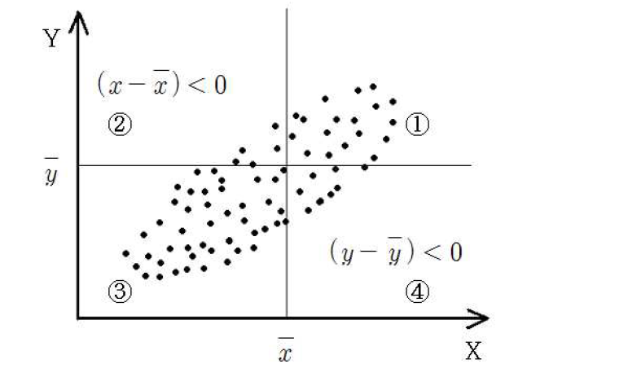
여기서
\[ \bar{y}=\frac{\sum_{i=1}^ny_i}{n}, \quad \bar{x}=\frac{\sum_{i=1}^nx_i}{n} \] 는 각각 Y와 X의 표본평균이다. 두 선은 그래프를 4분면으로 나눈다. 그래프의 각 점 \(i\)에 대하여, 다음의 값들을 계산하자
- \(y_i-\bar{y}\), 반응변수의 평균으로부터 각 관측개체 \(y_i\)의 편차
- \(x_i-\bar{x}\), 설명변수의 평균으로부터 각 관측개체 \(x_i\)의 편차
- \((y_i-\bar{y})(x_i-\bar{x})\), 위의 두 값의 곱
그래프에서, 1사분면과 2사분면의 모든 점들에 대한 (\(y_i-\bar{y}\))의 값은 양(+)이고, 3사분면과 4사분면의 모든 점들에 대해서는 음(-)이라는 것이 명백하다. 유사하게, 1사분면과 4사분면의 모든 점들에 대한 (\(x_i-\bar{x}\))의 값은 양(+)이고, 2사분면과 3사분면의 모든 점들에 대해서는 음(-)이다.
- 모수에 대한 추정
변수 x와 y를 직선 회귀모형을 적합시킬 경우 단순회귀모형은 \(y_i=\beta_0+\beta_1x_i+\epsilon_i\)이다. 여기서 모수 \(\beta_0\)와 \(\beta_1\)추정하기를 원한다. 이는 반응변수 대 설명변수의 산점도에 있는 점들을 가장 잘 적합(best fit) 혹은 표현하는 직선을 찾는 것과 동일하다. 우리는 통상적인 최소제곱법(least squares method)을 이용하여 모수를 추정하는데, 이 방법은 선의 각 점으로부터 수직거리(vertical distance)의 제곱합을 최소로 하는 선을 제공한다. 수직거리는 반응변수에 있는 오차들을 나타낸다.
이 오차들은 회귀모형식을 다음과 같이 재 표현하여 얻을 수 있다.
\[ \epsilon_{i}=y_{i}-\beta_{0}-\beta_{1}x_{i},\quad i=1,2,\cdots,n \]
이러한 거리들의 제곱합은 다음과 같이 쓰일 수 있다.
\[ S(\beta_{0},\beta_{1})=\sum_{i=1}^{n}{\epsilon_{i}^{2}}=\sum_{i=1}^{n}{(y_{i}-\beta_{0}-\beta_{1}x_{i})^{2}} \] \(S(\beta_{0},\beta_{1})\)을 최소로 하는 값 \(\hat{\beta}_0\)과 \(\hat{\beta}_1\)은 다음과 같이 주어진다.
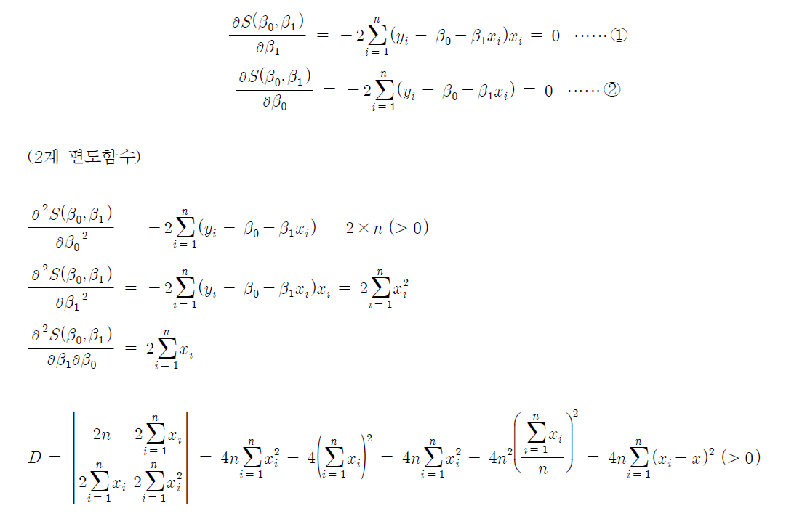 따라서 \(\frac{\partial S(\beta_0, \beta_1)}{\partial \beta_1}\), \(\frac{\partial S(\beta_0, \beta_1)}{\partial \beta_0}\)을 0으로 만드는 \(\beta_1\)과 \(\beta_0\)이 존재한다면 \(D>0\)이므로, 그 \(\beta_1\)과 \(\beta_0\)는 모든 평면에서 최소값이 된다.
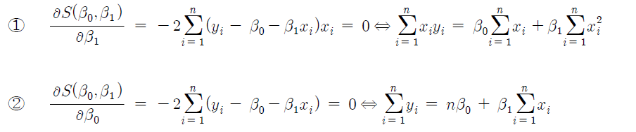
①과 ②를 연립하면 최종적으로
\[ \hat{\beta}_1=\frac{\sum_{i=1}^n(y_i-\bar{y})(x_i-\bar{x})}{\sum_{i=1}^n (x_i-\bar{x})^2}, \quad \hat{\beta}_0=\bar{y}-\hat{\beta}_1\bar{x} \]
\(\hat{\beta}_0\)이 \(\hat{\beta}_1\)을 이용하기 때문에, \(\hat{\beta}_0\)에 대한 공식보다 \(\hat{\beta}_1\)에 대한 공식이 먼저 제시되었다. \(\hat{\beta}_0\)과 \(\hat{\beta}_1\)은 \(\beta_0\)와 \(\beta_1\)에 대한 최소제곱추정치라고 불리는데, 이는 \(\hat{\beta}_0\)와 \(\hat{\beta}_1\)이 최소제곱법의 해이며, 선의 각 점으로부터 수직거리의 가능한 제곱합을 최소로 하는 선에 대한 절편(intercept)과 기울기(slope)이기 때문이다. 이러한 이유로 그 선을 최소제곱회귀선(least squares regression line)이라고 한다. 최소제곱회귀선은 다음과 같이 주어진다.
\[ \hat{Y}=\hat{\beta}_0+\hat{\beta}_1X \] 우리가 수직거리의 제곱합을 최소로 하는 선을 항상 찾을 수 있기 때문에 최소제곱선이 항상 존재한다는 것을 주목하여라. 사실, 다음에 살펴볼 것처럼, 어떤 경우에는 최소제곱선이 유일하지 않을 수도 있다. 이러한 경우들은 실제에서는 자주 일어나지 않는다.
우리의 데이터에 있는 각 관측개체들에 대하여 다음을 계산할 수 있다.
\[ \hat{y}_i = \hat{\beta}_0+\hat{\beta}_1x_i, \,\,\, i=1,2,\ldots,n \] 이것들은 적합값(fitted value)이라고 불린다. 따라서 \(i\)번째 적합값 \(\hat{y}_i\)는 최소제곱회귀선에서 \(x_i\)에 대응되는 점이다. \(i\)번째 관측개체에 대응되는 수직거리는 다음과 같다.
\[ e_i=y_i-\hat{y}_i, \,\,\, i=1,2,\ldots, n \] 이들 수직거리는 보통의(ordinary) 최소제곱잔차(least squares residual)라고 불린다. 잔차 의 성질 중 하나는 그들의 합이 0이라는 것이다. 이것은 선의 위쪽에 있는 거리들의 합이 선의 아래쪽에 있는 거리들의 합과 같다는 것을 의미한다.
- 결정계수
선형모형에 포함된 모수들의 최소제곱추정치를 구한 후, 다음과 같은 값들을 계산할 수 있다.
\[ SST=\sum_{i=1}^n(y_i-\bar{y})^2 \quad SSR=\sum_{i=1}^n(\hat{y}_i-\bar{y})^2 \quad SSE=\sum_{i=1}^n (y_i-\hat{y}_i)^2 \] 여기서 SST는 그의 평균 로부터 Y의 제곱편차의 총합(total sum of squared deviations)을 나타내고, SSR은 회기에 기인한 제곱합(sum of squares due to regression)을 나타내며, SSE는 제곱잔차(오차)의 합계(sum of squared residuals(errors))를 나타낸다.
단순과 다중회귀 모두에서 다음과 같은 기본적인 관계가 성립한다.
\[ SST = SSR + SSE \] 이 방정식은 다음과 같은 관측개체에 대한 묘사로부터 나타내어진다.
\[ 관측값(y_i)=적합값(\hat{y}_i)+적합으로부터의 편차(y_i-\hat{y}_i) \]
양 변에서 \(\bar{y}\)를 빼면 다음을 얻는다.
\[ 평균으로부터의 편차(y_i-\bar{y}) = 적합에 기인한 편차(\hat{y}_i-\bar{y}) + 잔차(y_i-\hat{y}_i) \]
이 관계를 그림으로 나타내면 다음과 같다.
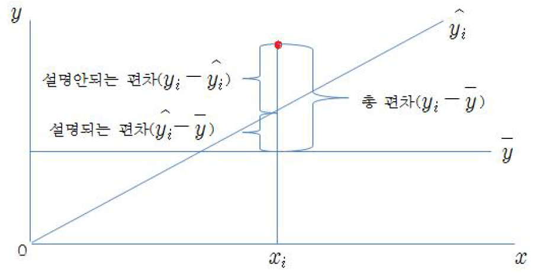
따라서 \(Y\)의 제곱편차의 총합은 두 개의 값으로 분할될 수 있는데, 첫 번째는 \(Y\)에 대한 예측자로서 \(X\)의 질(quality)을 나타내는 \(SSR\)이고 두 번째는 이 예측의 오차를 측정하는 \(SSE\)이다. 그러므로 \(R^2=SSR/SST\)는 \(Y\)의 전체 변이(variation) 중에서 예측변수 \(X\)에 의하여 설명되는 비율로 해석될 수 있다. \(R^2\)를 다음과 같이 다시 쓸 수 있다.
\[ R^2=\frac{SSR}{SST}=1-\frac{SSE}{SST} \] 적합도지수(goodness-of-index) \(R^2\)는 반응변수 \(Y\)의 전체 변이(variability) 중에서 예측변수 \(X\)에 의하여 설명되는 비율로 해석될 수 있다. \(SSE\le SST\)이므로 \(0 \le R^2 \le 1\)임을 주목한다. 만약 \(R^2\)가 1에 가까우면 \(X\)가 \(Y\)의 변이 중 많은 부분을 설명한다는 것을 의미한다. 예측변수 \(X\)가 반응변수 \(Y\)를 얼마나 설명(결정)하는지에 관한 정보를 우리에게 제공하기 때문에, \(R^2\)는 결정계수(coefficient of determination)라고 불리기도 한다. \(R^2\)에 대한 이러한 해석은 다중회귀의 경우에도 그대로 적용될 수 있다.
회귀분석을 위해 다음과 같은 자료를 고려하자. 여기서 매출액()은 광고액()에 영향을 받을 것이라고 가정한다.
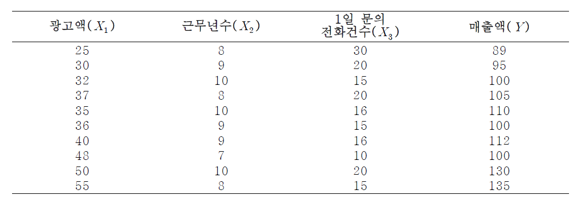
10.2.1 산점도 그리기
산점도(scatter plot) 그리기는 회귀분석의 첫 단계이다. 산점도를 보고, 회귀모형을 직선으로 나타낼 것인지 혹은 곡선으로 나타낼 것인지를 결정한다. 여기서는 광고액이 매출액에 미치는 영향을 알아보기 위하여 산점도를 살펴보자.
[그래프]에서 산점도/점도표를 선택한 후 단순 산점도를 선택한다. 여기서 X축에 광고액을 넣고 Y축에 매출액을 넣는다.
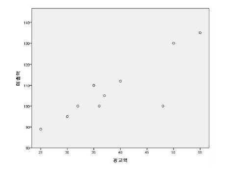 \(X\)축에 광고액을 선택하고, 축에 매출액을 선택하여 산점도를 그려보니, 광고액이 증가함에 따라 매출액이 일차함수적(선형관계적)으로 증가하고 있는 것을 파악할 수 있다. 이를 토대로 회귀직선모형 또는 회귀선형모형을 설정할 수 있다
10.2.2 단순회귀분석의 실행
단순회귀분석을 실행하려면 다음의 절차를 따르면 된다.
분석(A)
회귀분석(R)
선형(L)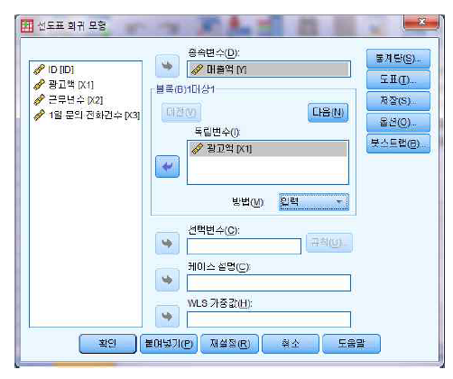
종속변수란에 매출액(\(Y\))을 입력하고, 독립변수란에 광고액(\(X_1\))을 입력한다. 그 외 통계량과 도표그리기는 다음과 같다.
- 통계량 구하기
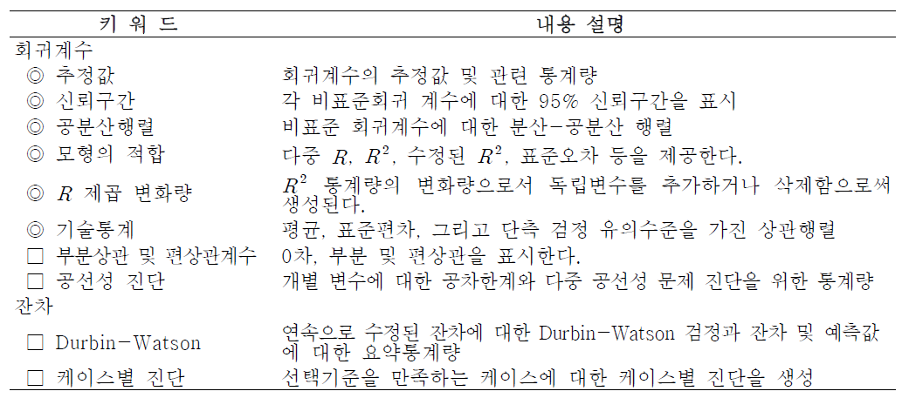
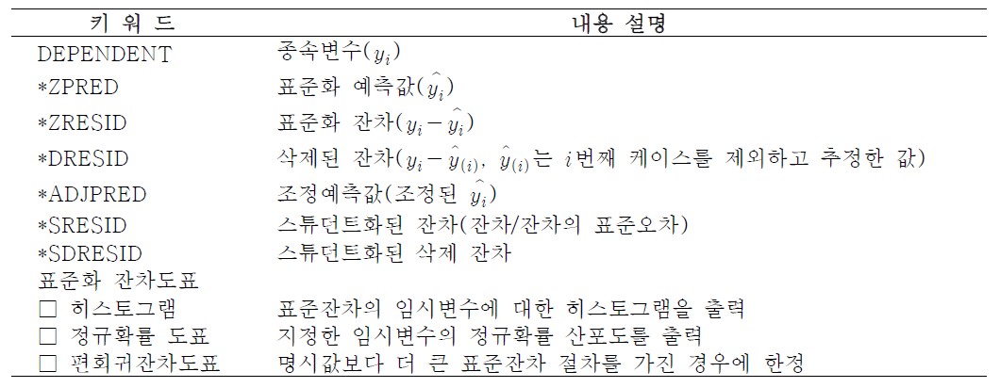
[결과 : 변수별 평균과 표준편차]
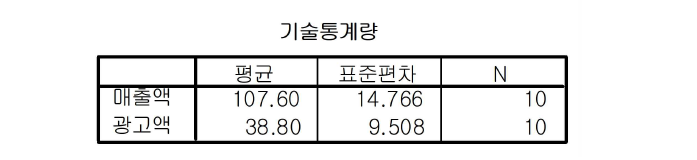
매출액과 광고액의 평균과 표준편차 및 사례수가 나열된다.
[결과 : 두 변수의 상관계수]
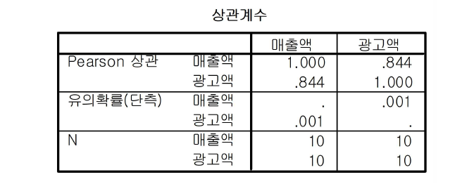
매출액과 광고액 간의 상관계수는 0.844이고, 두 변수의 상관계수는 유의하다(P = 0.001).
[결과 : 단순회귀의 결정계수]
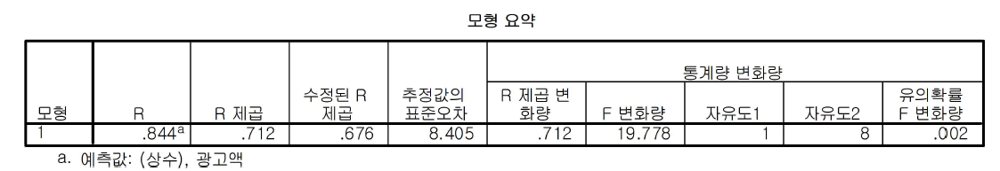
[\(R^2\): 0.712] 결정계수 은 총변동 중에서 회귀선에 의하여 설명되는 비율을 의미하는 것으로 매출액의 변동 중에서 71.2%가 광고액에 의하여 설명된다는 것을 의미한다. \(R^2\)의 범위는 \(0\le R^2 \le 1\)의 값을 지닌다. 모든 관찰값과 회귀식이 일치한다면 \(R^2=1\)이 되어 독립변수와 종속변수 간에 100%의 상관관계가 있다고 할 수 있다. 즉, \(R^2\)의 값이 1에 가까울수록 회귀선은 표본을 설명하는데 유용하다
[수정된 \(R^2\): 0.676] 회귀분석이 단계적으로 전개될 때 자유도를 고려하여 조정된 \(R^2\)으로서, 일반적으로 모집단의 결정계수를 추정할 때 더 사용된다. 표본의 수가 충분히 큰 경우에는 위의 \(R^2\)값과 동일하다.
[결과 : 단순회귀분석의 분산분석표]
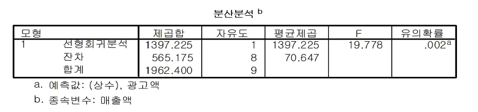
회귀식이 통계적으로 유의한지를 검정하는 분산분석표이다. \(F\)-통계량의 유의확률이 0.002로서 0.05보다 작다. 즉, 이 회귀식은 통계적으로 매우 유의하다고 할 수 있다.
[결과 : 단순회귀모형의 계수 설명]
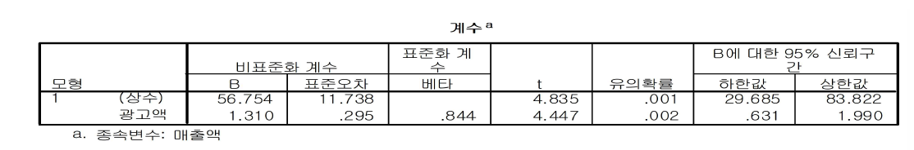
[상수 56.754, 유의확률 0.001] 회귀식의 상수값은 56.754이며, 유의확률은 0.001<0.05이므로 통계적으로 유의하다. [광고액 B=1.310, 유의확률 0.02] 광고액의 회귀계수는 1.310이고, 이 회귀계수의 통계적 유의성을 검정하는 t-값은 4.447로 유의확률이 0.002<0.05이므로, 이 회귀계수는 통계적으로 매우 유의하다고 볼 수 있다. 따라서 회귀식은 다음과 같다.
\[ \hat{Y}(매출액)=56.754+1.310X_1(광고액) \]
이 회귀식의 의미는 광고액이 1억원이 추가될 때마가 매출액은 1.310억원씩 증가한다는 것을 나타내고 있다. \(Y\)절편은 56.754이므로, 광고액이 0원일때, 매출액은 56.754억원이므로 의미가 없다. 만약, 광고액이 56억원인 경우는 예상 매출액이 \(\hat{Y}=56.754+1.310(56)\approx 130\)억원이 된다.
[B에 대한 95% 신뢰구간] 광고액 1억원을 늘리면 95%의 신뢰수준에서 광고액은 0.631억원에서 1.990억원 사이로 증가한다. 회귀계수의 통계적 유의성을 신뢰구간으로 검정해보면 이 신뢰구간이 0을 포함하지 않으므로 귀무가설, 즉 회귀계수는 0이라는 귀무가설을 기각한다.
[비표준화계수 와 표준화계수] 우리가 관심을 독립변수들은 몇몇 경우를 제외하고는 서로 다른 크기(단위)를 갖는 경우가 일반적이다. 따라서 독립변수들의 크기(단위)에 의해 회귀계수(비표준화계수)의 크기가 달라져서 독립변수들이 종속변수에 미치는 영향력을 직접 비교하는 것은 부적절하다. 따라서 독립변수들의 영향력을 직접비교할 수 있도록 각 독립변수들의 크기(단위)를 통일하게 하기위해서 각 독립변수들의 평균과 표준편차를 이용한 표준화가 필요하다. 각 독립변수들을 표준화한 값을 이용해 추정한 회귀계수를 표준화회귀계수(표준화계수)라 한다. 따라서 추정된 표준화회귀계수의 절대값을 이용해 각 독립변수들이 종속변수에 미치는 영향력을 직접 비교할 수 있다.
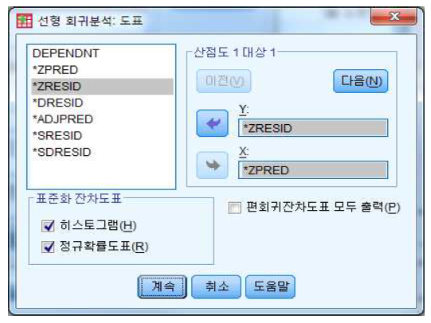
도표 옵션을 선택하면 다음과 같은 창이 뜬다. 여기서 X에는 *ZPRED를 넣고 Y에는 *ZRESID를 넣는다. 표준화 잔차도표에서 정규확률도표(R)를 선택한다.
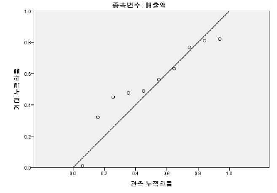
회귀 표준화 잔차의 정규 P-P 도표는 잔차(오차항)의 정규성을 살펴보는 그림이다. 가운데 실선을 따라 점들이 모여 있을수록 정규성을 만족한다.
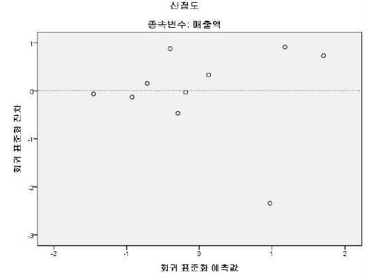 회귀 표준화 잔차를 나타낸 산점도는 잔차의 등분산성, 선형성 등을 판단한다. 회귀 표준화 잔차 값이 0을 기준으로 고르게 퍼져 있으면 등분산성을 만족하는데 문제가 없으며, 잔차들이 특정한 패턴없이 무작위로 퍼져있다면 선형성을 가정하는데 문제가 없다.